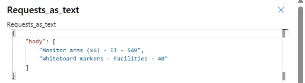

- Power Automate
- Level 3 · Triggers and connectors · 1 of 7
SharePoint triggers and actions
SharePoint lists are where many teams keep requests, trackers and registers, so they are often the first thing people automate. The SharePoint connector gives you triggers that start a flow when items change, and actions to read, create and update items.
The demo list
A list called Website Demo Requests with five columns: Title, Status (choice: New, Approved, Rejected), Priority (choice), Amount (number) and Department (text). The flow reads the new requests, lists them, and adds one more.

Get items with a filter
| Setting | Demo value | Why |
|---|---|---|
| Filter Query | Status eq 'New' | Only new requests come back from SharePoint |
| Order By | Amount desc | Largest first |
| Top Count | 10 | Never more than 10 rows |

Filter and order use the column's internal name, which can differ from what you see. A column created as Request Status is often Request_x0020_Status internally. Check it in the list settings (the address of the column's edit page ends with Field= and the internal name).
Create item

Choice columns need the choice value (New), and person columns need an email or claims value. In the designer both appear as drop-downs.
Which trigger?
| Trigger | Fires when |
|---|---|
| When an item is created | A new item is added |
| When an item is created or modified | Any add or edit. Pair it with a trigger condition (next articles) so it only runs when it matters |
| When an item or a file is deleted | An item is removed |
| For a selected item | A user starts the flow from the list's Automate menu |
New to this? Start from the basics optional
Site address and list: every SharePoint step needs both. Pick them from the drop-downs, or put them in environment variables so the flow can move between sites.
Internal name: the fixed technical name of a column, set when the column is created. Renaming a column changes only its display name.
OData filter: the same query syntax as the Level 2 OData article: eq, ne, gt, and, or.
Build it step by step optional
- Create a list with Title, Status (choice), Priority (choice), Amount (number) and Department (text), and add a few rows.
- Create an instant flow. Add Get items (SharePoint), choose the site and list, and open Show all.
- Set Filter Query
Status eq 'New', Order ByAmount desc, Top Count 10. - Add a Select in text mode over value:
concat(item()?['Title'], ' - ', string(item()?['Amount'])). - Add Create item for the same list and fill Title, Status, Amount.
- Add a Compose with the ID from Create item. Test and check the list: the new row is there.
Update, delete and special columns
| Need | How |
|---|---|
| Change an item | Update item with the item's Id. Required columns must be filled in again, even if they don't change, so map them from the trigger or a Get item. |
| Remove an item | Delete item with the Id. It goes to the site's recycle bin. |
| Read a Choice column | triggerBody()?['Status']?['Value']. The column is an object; Value is the text. |
| Read a Person column | triggerBody()?['AssignedTo']?['Email'] or ?['DisplayName'] |
| Set a Person column | Use the person's email in the Claims box (for example alex@contoso.com). |
| Link to the item in a message | triggerBody()?['{Link}'] gives the item's address, ready for an email or Teams message. |
Size limits to plan for. A Single line of text column holds up to 255 characters, and a Multiple lines of text column up to 63,999. Writing longer text to a single-line column fails, so choose multiple lines for comments, AI output or email bodies.
Common mistakes
- Get items with no filter on a big list, then a Condition inside a loop. Filter in SharePoint instead.
- Expecting every item: Get items returns one page by default. Set Top Count, or turn on Pagination in the action's settings for larger lists.
- Filtering by display name. Use the internal name.